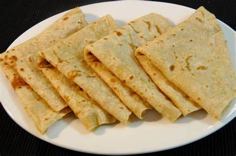

Chapati

An African cuisine that is loved by many due to its diversity.
It is made out of wheat and can be served with any stew.
Ingredients
- Wheat Flour
- Hot water
- 2-3 Onions
- Salt
- Cooking Oil
- Sugar
- Rolling Pin
Steps
- Add the warm water to a basin with wheat flour, salt and sugar.
- Knit the flour till it makes a dough.
- Let the dough rest for 30 minutes.
- Apply cooking oil to the dough.
- Cut it to sizeable pieces.
- Heat the pan and roll the small pieces using a rolling pin till they are circular.
- Cook the dough in the pan while flipping till it is perfectly cooked.